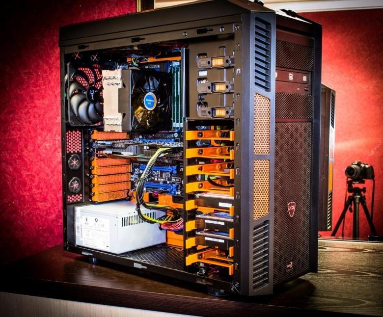

Этот раздел будет пополняться статьями и видеоматериалами,
прочитав и изучив которые вы сможете понять,
как стать программистом с нуля самостоятельно.
Все статьи написаны лично мной - программистом-практиком с многолетним опытом работы.
Причём ценность для вас будет представлять именно мой личный опыт,
потому что я изначально был самоучкой, постигал всё методом проб и ошибок.
Потом, конечно, я ещё и закончил университет.
Ссылка на внешний ресурс.


| Типы Видеокарт |
|---|
| NVIDIA | Radion |
| Geforce gtx1060 | Rad rx580 |
| Geforce gt730 | Rad 550 |
То есть в теории тоже поднаторел. Но это было потом, когда я уже работал программистом.
То есть мне удалось устроиться на работу, не имея не то что высшего,
но даже хотя бы специального образования в области программирования.
А всё потому, что…
Впрочем, обо всём этом я буду рассказывать в отдельных статьях.
А пока ознакомьтесь со структурой этого раздела:
В этом подразделе будут статьи для самых самых неопытных, для тех,
кто только ещё задумался над тем, чтобы стать программистом.
Здесь я буду рассказывать о том, с чего лучше начать изучение программирования
и каких ошибок при этом желательно избежать.
В этомразделе я будурассказывать о том,что, где и как
изучать,чтобы стать профессиональным программистом.